Next: Speex narrowband mode Up: The Speex Codec Manual Previous: Formats and standards Contents Index
Speex is based on CELP, which stands for Code Excited Linear Prediction. This section attempts to introduce the principles behind CELP, so if you are already familiar with CELP, you can safely skip to section 8. The CELP technique is based on three ideas:
The source-filter model of speech production assumes that the vocal cords are the source of spectrally flat sound (the excitation signal), and that the vocal tract acts as a filter to spectrally shape the various sounds of speech. While still an approximation, the model is widely used in speech coding because of its simplicity.Its use is also the reason why most speech codecs (Speex included) perform badly on music signals. The different phonemes can be distinguished by their excitation (source) and spectral shape (filter). Voiced sounds (e.g. vowels) have an excitation signal that is periodic and that can be approximated by an impulse train in the time domain or by regularly-spaced harmonics in the frequency domain. On the other hand, fricatives (such as the "s", "sh" and "f" sounds) have an excitation signal that is similar to white Gaussian noise. So called voice fricatives (such as "z" and "v") have excitation signal composed of an harmonic part and a noisy part.
The source-filter model is usually tied with the use of Linear prediction. The CELP model is based on source-filter model, as can be seen from the CELP decoder illustrated in Figure 1.
Linear prediction is at the base of many speech coding techniques,
including CELP. The idea behind it is to predict the signal 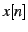
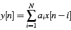
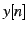
is the linear prediction of . The prediction error is thus given by: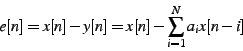
The goal of the LPC analysis is to find the best prediction coefficients
which minimize the quadratic error function:
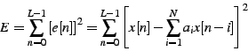
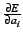
equal to zero: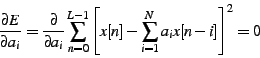
For an order 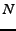 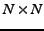 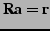
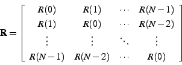
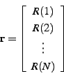
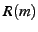
, the auto-correlation of the signal , computed as:
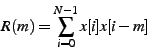
Because is toeplitz hermitian, the Levinson-Durbin
algorithm can be used, making the solution to the problem
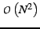 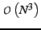 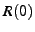
During voiced segments, the speech signal is periodic, so it is possible
to take advantage of that property by approximating the excitation
signal 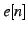
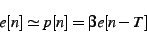
where is the pitch period, 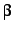 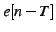
The final excitation will be the sum of the pitch prediction
and an innovation signal 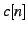
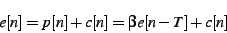
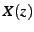
as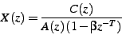
Most (if not all) modern audio codecs attempt to ``shape'' the
noise so that it appears mostly in the frequency regions where the
ear cannot detect it. For example, the ear is more tolerant to noise
in parts of the spectrum that are louder and vice versa. In
order to maximize speech quality, CELP codecs minimize the mean square
of the error (noise) in the perceptually weighted domain. This means
that a perceptual noise weighting filter 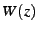
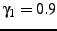
and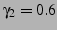
in the Speex reference implementation. If a filter has (complex) poles at in the -plane, the filter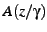
will have its poles at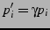
, making it a flatter version of .
The weighting filter is applied to the error signal used to optimize
the codebook search through analysis-by-synthesis (AbS). This results
in a spectral shape of the noise that tends towards 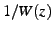
One of the main principles behind CELP is called Analysis-by-Synthesis (AbS), meaning that the encoding (analysis) is performed by perceptually optimising the decoded (synthesis) signal in a closed loop. In theory, the best CELP stream would be produced by trying all possible bit combinations and selecting the one that produces the best-sounding decoded signal. This is obviously not possible in practice for two reasons: the required complexity is beyond any currently available hardware and the ``best sounding'' selection criterion implies a human listener.
In order to achieve real-time encoding using limited computing resources, the CELP optimisation is broken down into smaller, more manageable, sequential searches using the perceptual weighting function described earlier.